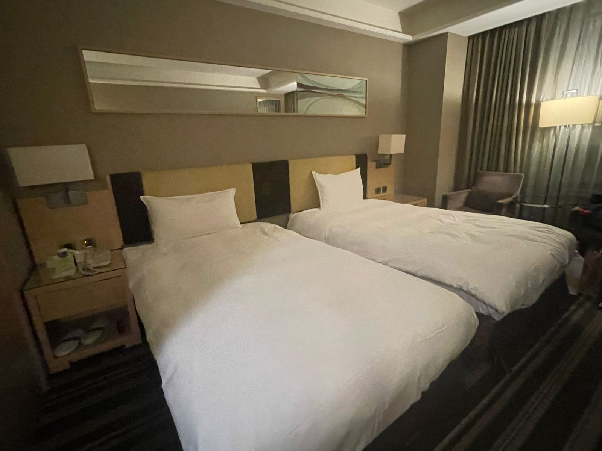
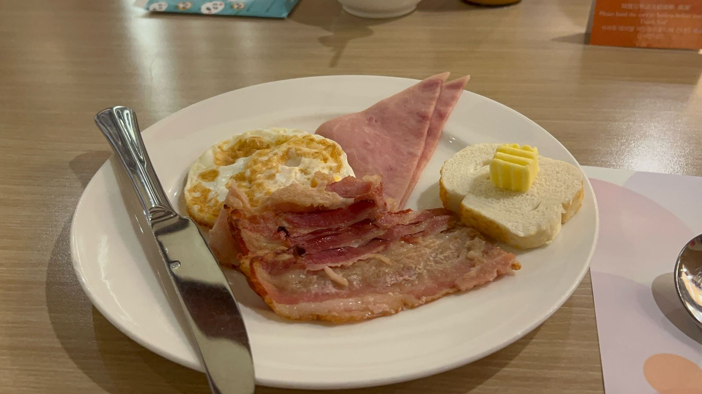
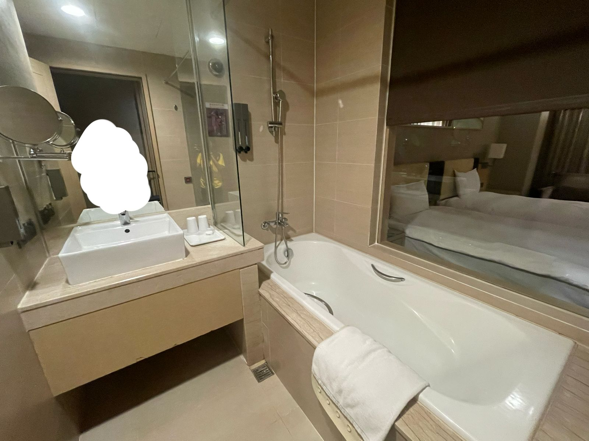

Angela Benedette Pranoto 8A / 02
Untuk pelajaran Bahasa Indonesia, saya harus mengamati dan menulis teks resensi untuk Fullon Hotel Shenkeng. Menginap di Fullon Hotel Shenkeng Lokasi: No. 236, Section 3, Beishen Road, Shenkeng District, New Taipei City. Tahun Berdiri: 2010 Pemilik/Korporasi: Fullon Hotels & Resorts Rating: 4.2/5 Fullon Hotel Shenkeng merupakan hotel berbintang 4,2 yang berlokasi di No. 236, Section 3, Beishen Road, Shenkeng District, New Taipei City. Hotel ini didirikan oleh Li Pao Construction pada tahun 2010. Untuk informasi lebih lanjut, dapat menghubungi hotel melalui nomor telepon +886 2 2701 9266 atau mengunjungi situs web resminya di https://www.fullon-hotels.com.tw. Di Sekitar Kota Taipei Fullon Hotel Shenkeng terletak di Taipei, ibu kota Taiwan, yang merupakan lokasi strategis dengan berbagai destinasi wisata menarik. Salah satu wisata utama di kota ini adalah Taipei 101, bangunan tertinggi di Taiwan, yang menawarkan pemandangan kota dengan ketinggian yang mencapai 508 meter. Selain itu, terdapat Raohe Night Market, yang menjual makanan dan oleh-oleh khas Taiwan yang mencerminkan budaya Tiongkok. Mata uang yang digunakan di Taiwan adalah New Taiwan Dollar (NTD), dengan nilai tukar sekitar 500 rupiah per NTD. Kota Taipei juga memiliki Chiang Kai-shek Memorial Hall, tempat bersejarah di mana pengunjung dapat mempelajari tentang pendiri Taiwan. Dengan iklim subtropisnya, udara di Taipei sejuk dan tidak terlalu panas maupun dingin. Fullon Hotel Shenkeng Setelah berwisata di Kota Taipei, Anda tentu membutuhkan tempat menginap yang nyaman. Cobalah menginap di Fullon Hotel Shenkeng dan nikmati fasilitas lengkap serta lokasi strategisnya! Hotel ini memiliki 317 kamar dengan berbagai jenis, mulai dari kamar standar, superior twin, deluxe, deluxe twin, kamar keluarga, hingga suite eksekutif. Harga dan ukuran kamar bervariasi, dari yang lebih kecil dan murah hingga yang lebih luas dan mewah. Meskipun saya menginap di kamar superior twin (Jenis kamar kedua terkecil), harganya sangat terjangkau dengan 1.232.851 rupiah per hari, dan ruangannya cukup luas dengan kamar mandi yang sangat besar. Hotel ini berbentuk persegi panjang dengan 14 lantai dan dilengkapi berbagai fasilitas seperti gym, kolam renang, pusat bisnis, dan lainnya. Jadi, menurut Anda, kira - kira hotel ini tergolong bagus atau biasa saja ya? Pelayanan di hotel ini sangat memuaskan, dengan staf yang selalu siap membantu kapanpun dibutuhkan. Kebersihannya juga terjaga dengan baik, tidak ada sampah yang menyebar, sehingga lingkungan terasa nyaman dan bersih. Hotel ini juga menyediakan satpam yang berjaga di pintu masuk selama 24 jam penuh untuk menjaga keamanan hotel. Selain itu, makanan yang disajikan saat sarapan sangat lezat dan bervariasi, mulai dari sayuran, buah-buahan, daging, karbohidrat, hingga berbagai pilihan minuman seperti air putih, minuman manis, dan minuman bersoda. Secara keseluruhan, hotel ini sangat baik karena tidak hanya menyediakan fasilitas yang lengkap, tetapi juga memberikan pelayanan yang maksimal kepada para pengunjung. Fullon Hotel Shenkeng hampir sempurna, tetapi tetap memiliki beberapa kekurangan. Pelayanan room service saat saya menginap sedikit kurang, misalnya mereka lupa mengganti tisu toilet. Fasilitas kamarnya mungkin kurang lengkap dibandingkan dengan yang disediakan Holiday Inn Kaohsiung. Selain itu, meskipun kategori makanan cukup lengkap, variasi jenis-jenis makanan dalam kategori tersebut masih terbatas. Meskipun demikian, hotel ini tetap tergolong sangat baik. Sebagai kesimpulan, Fullon Hotel Shenkeng memiliki pelayanan yang baik, kebersihan yang terjaga, dan keamanan memandai, meskipun ada sedikit kelalaian dalam room service dan kurang variasi makanan. Hotel ini pasti cocok jika Anda mengutamakan kebersihan, pelayanan yang baik, makanan sarapan yang sederhana, serta fasilitas yang mendukung. Penulis: Angela Benedette Pranoto Editor: Dominique Clarence Djaya |
||
|  |  |  |